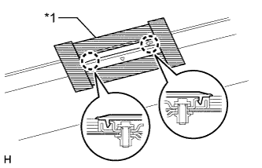
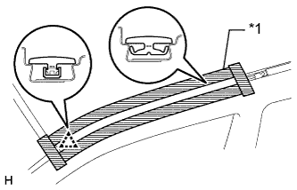
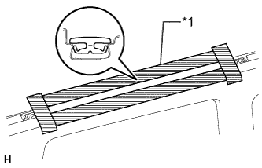
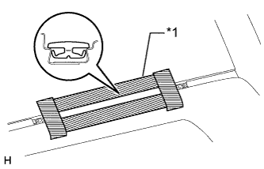
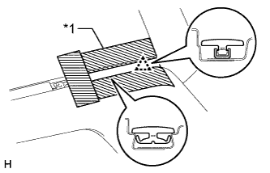

БОКОВОЙ ВОДОСТОЧНЫЙ ЖЕЛОБОК ВДОЛЬ БОКОВОЙ КРОМКИ КРЫШИ > СНЯТИЕ |
| 1. СНИМИТЕ ЛЕВЫЙ БАГАЖНИК НА КРЫШЕ В СБОРЕ (для моделей с багажником на крыше) |
Снимите багажник на крыше (Нажмите здесь).
| 2. СНИМИТЕ СОЕДИНИТЕЛЬНУЮ НАКЛАДКУ ЛЕВОГО БОКОВОГО ВОДОСТОЧНОГО ЖЕЛОБКА ВДОЛЬ БОКОВОЙ КРОМКИ КРЫШИ (для моделей без багажника на крыше) |
|  |
Наклейте защитную ленту вокруг соединительной накладки бокового водосточного желобка вдоль боковой кромки крыши.
Освободите 2 захвата и снимите соединительную накладку бокового водосточного желобка вдоль боковой кромки крыши.
| *1 | Защитная клейкая лента |
| 3. СНИМИТЕ ЛЕВЫЙ БОКОВОЙ ВОДОСТОЧНЫЙ ЖЕЛОБОК ВДОЛЬ БОКОВОЙ КРОМКИ КРЫШИ |
|  |
Наклейте защитную клейкую ленту вокруг бокового водосточного желобка вдоль боковой кромки крыши.
Освободите фиксатор и снимите боковой водосточный желобок вдоль боковой кромки крыши.
| *1 | Защитная клейкая лента |
| 4. СНИМИТЕ ЛЕВЫЙ ЦЕНТРАЛЬНЫЙ БОКОВОЙ ВОДОСТОЧНЫЙ ЖЕЛОБОК ВДОЛЬ БОКОВОЙ КРОМКИ КРЫШИ № 2 |
|  |
Наклейте защитную клейкую ленту вокруг центрального водосточного желобка вдоль боковой кромки крыши № 2.
Снимите центральный боковой водосточный желобок вдоль боковой кромки крыши № 2.
| *1 | Защитная клейкая лента |
| 5. СНИМИТЕ ЛЕВЫЙ ЦЕНТРАЛЬНЫЙ ЖЕЛОБОК ВДОЛЬ БОКОВОЙ КРОМКИ КРЫШИ |
|  |
Наклейте защитную клейкую ленту вокруг центрального водосточного желобка вдоль боковой кромки крыши.
Снимите центральный водосточный желобок вдоль боковой кромки крыши.
| *1 | Защитная клейкая лента |
| 6. СНИМИТЕ ЛЕВЫЙ ЗАДНИЙ ВОДОСТОЧНЫЙ ЖЕЛОБОК ВДОЛЬ БОКОВОЙ КРОМКИ КРЫШИ |
|  |
Наклейте защитную ленту вокруг заднего бокового водосточного желобка вдоль боковой кромки крыши.
Освободите фиксатор и снимите задний боковой водосточный желобок вдоль боковой кромки крыши.
| *1 | Защитная клейкая лента |